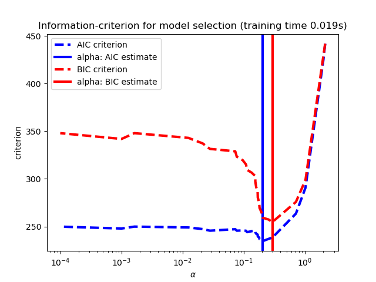
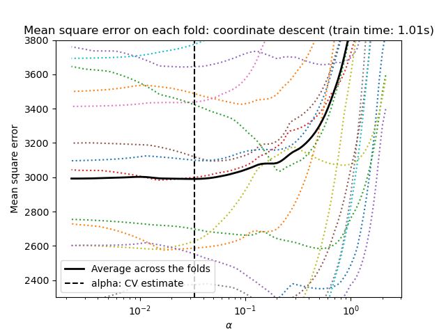
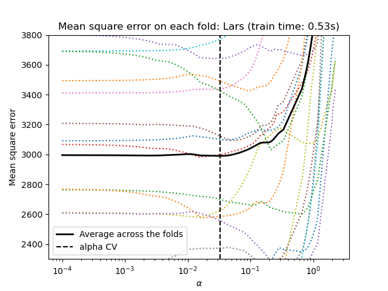

Nota
Haz clic en aquí para descargar el código de ejemplo completo o para ejecutar este ejemplo en tu navegador a través de Binder
Selección del modelo Lasso: Validación cruzada / AIC / BIC¶
Utiliza el criterio de información de Akaike (AIC), el criterio de información de Bayes (BIC) y la validación cruzada para seleccionar un valor óptimo del parámetro de regularización alfa del estimador Lasso.
Los resultados obtenidos con LassoLarsIC se basan en criterios AIC/BIC.
La selección de modelos basada en el criterio de información es muy rápida, pero depende de una estimación adecuada de los grados de libertad, se derivan para muestras grandes (resultados asintóticos) y suponen que el modelo es correcto, es decir, que los datos son realmente generados por este modelo. También tienden a romperse cuando el problema está mal condicionado (más características que muestras).
Para la validación cruzada, utilizamos 20 veces con 2 algoritmos para calcular la trayectoria del Lasso: el descenso de coordenadas, implementado por la clase LassoCV, y Lars (regresión de ángulo mínimo), implementado por la clase LassoLarsCV. Ambos algoritmos dan aproximadamente los mismos resultados. Difieren en cuanto a su velocidad de ejecución y a las fuentes de errores numéricos.
Lars calcula una solución de trayectoria sólo para cada pliegue de la trayectoria. Como resultado, es muy eficiente cuando sólo hay unos pocos pliegues, que es el caso si hay pocas características o muestras. Además, es capaz de calcular la trayectoria completa sin necesidad de establecer ningún metaparámetro. Por el contrario, el descenso por coordenadas calcula los puntos de la trayectoria en una cuadrícula preestablecida (aquí utilizamos la predeterminada). Por lo tanto, es más eficiente si el número de puntos de la cuadrícula es menor que el número de pliegues de la trayectoria. Esta estrategia puede ser interesante si el número de características es realmente grande y hay suficientes muestras para seleccionar una gran cantidad. En cuanto a los errores numéricos, para las variables muy correlacionadas, Lars acumulará más errores, mientras que el algoritmo de descenso por coordenadas sólo muestreará la trayectoria en una cuadrícula.
Ten en cuenta cómo el valor óptimo de alfa varía para cada pliegue. Esto ilustra por qué es necesaria la validación cruzada anidada cuando se trata de evaluar el rendimiento de un método para el que se elige un parámetro mediante validación cruzada: esta elección del parámetro puede no ser óptima para los datos no vistos.
- 
- 
- 
Out:
Computing regularization path using the coordinate descent lasso...
Computing regularization path using the Lars lasso...
print(__doc__)
# Author: Olivier Grisel, Gael Varoquaux, Alexandre Gramfort
# License: BSD 3 clause
import time
import numpy as np
import matplotlib.pyplot as plt
from sklearn.linear_model import LassoCV, LassoLarsCV, LassoLarsIC
from sklearn import datasets
# This is to avoid division by zero while doing np.log10
EPSILON = 1e-4
X, y = datasets.load_diabetes(return_X_y=True)
rng = np.random.RandomState(42)
X = np.c_[X, rng.randn(X.shape[0], 14)] # add some bad features
# normalize data as done by Lars to allow for comparison
X /= np.sqrt(np.sum(X ** 2, axis=0))
# #############################################################################
# LassoLarsIC: least angle regression with BIC/AIC criterion
model_bic = LassoLarsIC(criterion='bic')
t1 = time.time()
model_bic.fit(X, y)
t_bic = time.time() - t1
alpha_bic_ = model_bic.alpha_
model_aic = LassoLarsIC(criterion='aic')
model_aic.fit(X, y)
alpha_aic_ = model_aic.alpha_
def plot_ic_criterion(model, name, color):
criterion_ = model.criterion_
plt.semilogx(model.alphas_ + EPSILON, criterion_, '--', color=color,
linewidth=3, label='%s criterion' % name)
plt.axvline(model.alpha_ + EPSILON, color=color, linewidth=3,
label='alpha: %s estimate' % name)
plt.xlabel(r'$\alpha$')
plt.ylabel('criterion')
plt.figure()
plot_ic_criterion(model_aic, 'AIC', 'b')
plot_ic_criterion(model_bic, 'BIC', 'r')
plt.legend()
plt.title('Information-criterion for model selection (training time %.3fs)'
% t_bic)
# #############################################################################
# LassoCV: coordinate descent
# Compute paths
print("Computing regularization path using the coordinate descent lasso...")
t1 = time.time()
model = LassoCV(cv=20).fit(X, y)
t_lasso_cv = time.time() - t1
# Display results
plt.figure()
ymin, ymax = 2300, 3800
plt.semilogx(model.alphas_ + EPSILON, model.mse_path_, ':')
plt.plot(model.alphas_ + EPSILON, model.mse_path_.mean(axis=-1), 'k',
label='Average across the folds', linewidth=2)
plt.axvline(model.alpha_ + EPSILON, linestyle='--', color='k',
label='alpha: CV estimate')
plt.legend()
plt.xlabel(r'$\alpha$')
plt.ylabel('Mean square error')
plt.title('Mean square error on each fold: coordinate descent '
'(train time: %.2fs)' % t_lasso_cv)
plt.axis('tight')
plt.ylim(ymin, ymax)
# #############################################################################
# LassoLarsCV: least angle regression
# Compute paths
print("Computing regularization path using the Lars lasso...")
t1 = time.time()
model = LassoLarsCV(cv=20).fit(X, y)
t_lasso_lars_cv = time.time() - t1
# Display results
plt.figure()
plt.semilogx(model.cv_alphas_ + EPSILON, model.mse_path_, ':')
plt.semilogx(model.cv_alphas_ + EPSILON, model.mse_path_.mean(axis=-1), 'k',
label='Average across the folds', linewidth=2)
plt.axvline(model.alpha_, linestyle='--', color='k',
label='alpha CV')
plt.legend()
plt.xlabel(r'$\alpha$')
plt.ylabel('Mean square error')
plt.title('Mean square error on each fold: Lars (train time: %.2fs)'
% t_lasso_lars_cv)
plt.axis('tight')
plt.ylim(ymin, ymax)
plt.show()
Tiempo total de ejecución del script: ( 0 minutos 2.779 segundos)